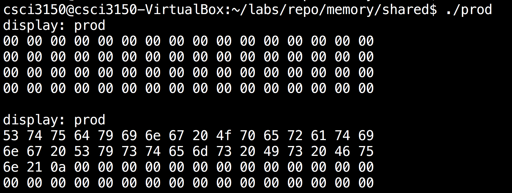
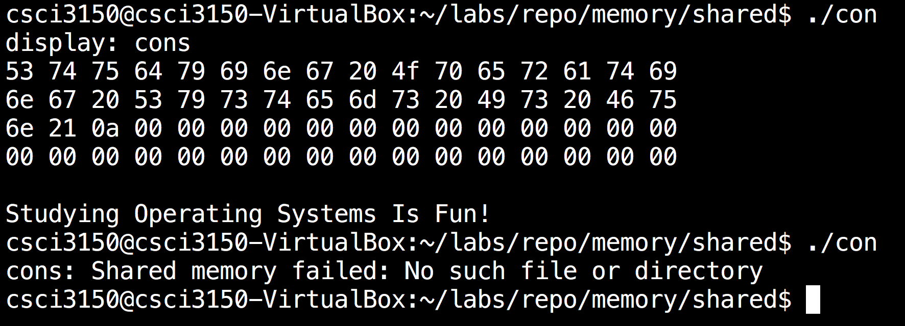
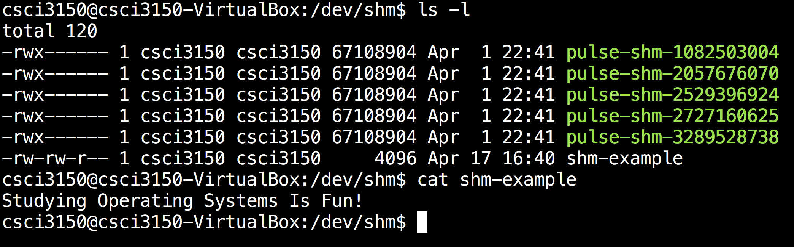

Shared Memory: Example
Here are two programs, namely producer and consumer. Producer will write something to shared memory; and the consumer will read from it and remove it.
Producer:
/**
* Simple program demonstrating shared memory in POSIX systems.
*
* This is the producer process that writes to the shared memory region.
*
* Figure 3.17
*
* @author Silberschatz, Galvin, and Gagne
* Operating System Concepts - Ninth Edition
* Copyright John Wiley & Sons - 2013
*
* modifications by dheller@cse.psu.edu, 31 Jan. 2014
*/
#include <stdio.h>
#include <stdlib.h>
#include <unistd.h>
#include <string.h>
#include <fcntl.h>
#include <sys/shm.h>
#include <sys/stat.h>
#include <sys/mman.h>
#include <sys/types.h>
#include <errno.h>
void display(char *prog, char *bytes, int n);
int main(void)
{
const char *name = "/shm-example"; // file name
const int SIZE = 4096; // file size
const char *message0 = "Studying ";
const char *message1 = "Operating Systems ";
const char *message2 = "Is Fun!";
const char *msg_end = "\n";
int shm_fd; // file descriptor, from shm_open()
char *shm_base; // base address, from mmap()
char *ptr; // shm_base is fixed, ptr is movable
/* create the shared memory segment as if it was a file */
shm_fd = shm_open(name, O_CREAT | O_RDWR, 0666);
if (shm_fd == -1) {
printf("prod: Shared memory failed: %s\n", strerror(errno));
exit(1);
}
/* configure the size of the shared memory segment */
ftruncate(shm_fd, SIZE);
/* map the shared memory segment to the address space of the process */
shm_base = mmap(0, SIZE, PROT_READ | PROT_WRITE, MAP_SHARED, shm_fd, 0);
if (shm_base == MAP_FAILED) {
printf("prod: Map failed: %s\n", strerror(errno));
// close and shm_unlink?
exit(1);
}
/**
* Write to the mapped shared memory region.
*
* We increment the value of ptr after each write, but we
* are ignoring the possibility that sprintf() fails.
*/
display("prod", shm_base, 64);
ptr = shm_base;
ptr += sprintf(ptr, "%s", message0);
ptr += sprintf(ptr, "%s", message1);
ptr += sprintf(ptr, "%s", message2);
ptr += sprintf(ptr, "%s", msg_end);
display("prod", shm_base, 64);
/* remove the mapped memory segment from the address space of the process */
if (munmap(shm_base, SIZE) == -1) {
printf("prod: Unmap failed: %s\n", strerror(errno));
exit(1);
}
/* close the shared memory segment as if it was a file */
if (close(shm_fd) == -1) {
printf("prod: Close failed: %s\n", strerror(errno));
exit(1);
}
return 0;
}
void display(char *prog, char *bytes, int n)
{
printf("display: %s\n", prog);
for (int i = 0; i < n; i++)
{ printf("%02x%c", bytes[i], ((i+1)%16) ? ' ' : '\n'); }
printf("\n");
}
Consumer:
/**
* Simple program demonstrating shared memory in POSIX systems.
*
* This is the consumer process
*
* Figure 3.18
*
* @author Gagne, Galvin, Silberschatz
* Operating System Concepts - Ninth Edition
* Copyright John Wiley & Sons - 2013
*
* modifications by dheller@cse.psu.edu, 31 Jan. 2014
*/
#include <stdio.h>
#include <stdlib.h>
#include <unistd.h>
#include <fcntl.h>
#include <sys/shm.h>
#include <sys/stat.h>
#include <sys/mman.h>
#include <errno.h>
#include <string.h>
void display(char *prog, char *bytes, int n);
int main(void)
{
const char *name = "/shm-example"; // file name
const int SIZE = 4096; // file size
int shm_fd; // file descriptor, from shm_open()
char *shm_base; // base address, from mmap()
/* open the shared memory segment as if it was a file */
shm_fd = shm_open(name, O_RDONLY, 0666);
if (shm_fd == -1) {
printf("cons: Shared memory failed: %s\n", strerror(errno));
exit(1);
}
/* map the shared memory segment to the address space of the process */
shm_base = mmap(0, SIZE, PROT_READ, MAP_SHARED, shm_fd, 0);
if (shm_base == MAP_FAILED) {
printf("cons: Map failed: %s\n", strerror(errno));
// close and unlink?
exit(1);
}
/* read from the mapped shared memory segment */
display("cons", shm_base, 64); // first as bytes, then as a string
printf("%s", shm_base);
/* remove the mapped shared memory segment from the address space of the process */
if (munmap(shm_base, SIZE) == -1) {
printf("cons: Unmap failed: %s\n", strerror(errno));
exit(1);
}
/* close the shared memory segment as if it was a file */
if (close(shm_fd) == -1) {
printf("cons: Close failed: %s\n", strerror(errno));
exit(1);
}
/* remove the shared memory segment from the file system */
if (shm_unlink(name) == -1) {
printf("cons: Error removing %s: %s\n", name, strerror(errno));
exit(1);
}
return 0;
}
void display(char *prog, char *bytes, int n)
{
printf("display: %s\n", prog);
for (int i = 0; i < n; i++)
{ printf("%02x%c", bytes[i], ((i+1)%16) ? ' ' : '\n'); }
printf("\n");
}
Compile:
$ gcc -o prod shm-posix-producer.c -lrt
$ gcc -o con shm-posix-consumer.c -lrt
 
Actually a shared memory can be found under the /dev folder as a file.

Reference: http://www.cse.psu.edu/~deh25/cmpsc473/notes/OSC/Processes/shm.html